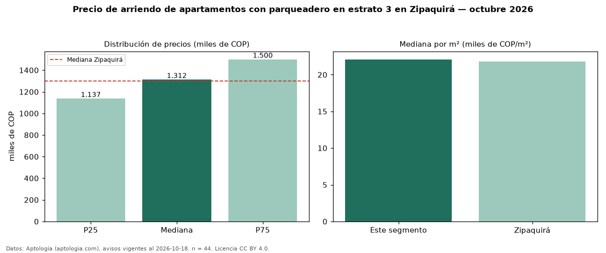

Precio de arriendo de apartamentos con parqueadero en estrato 3 en Zipaquirá — octubre 2026
COP 1,31 millones al mes es el canon mediano de apartamentos con parqueadero en estrato 3 en arriendo en Zipaquirá (n = 44 avisos). Eso es 10 % más que la mediana de los apartamentos en estrato 3 en arriendo de Zipaquirá (COP 1,19 millones, n = 101); este segmento reúne el 44 % de esos avisos. Por metro cuadrado, la mediana es COP 22.086/m² al mes (n = 44), 11 % por encima de los apartamentos en estrato 3 en arriendo de Zipaquirá (COP 19.982/m²). El área mediana anunciada es 60 m². El segmento con más oferta es el de 3 o más habitaciones (40 avisos, mediana COP 1,35 millones). La administración mediana declarada es COP 227.770 al mes (n = 18), aparte del canon. La mediana de todos los apartamentos en arriendo de Zipaquirá es COP 1,30 millones (+1 % de diferencia). La mitad central de los avisos va de COP 1,14 millones a COP 1,50 millones (razón 1,3), una dispersión baja. Datos: Aptología (aptologia.com), CC BY 4.0 — https://www.aptologia.com/arriendo/zipaquira. Archivos: PDF, CSV con las cifras y gráfica PNG.

| Avisos únicos | 44 |
|---|---|
| Percentil 25 | COP 1.137.000 |
| Mediana | COP 1.312.500 |
| Percentil 75 | COP 1.500.000 |
| Mediana por m² | COP 22.085 |
Fuente: avisos vigentes de portales inmobiliarios recopilados por Aptología, deduplicados (mínimo 30 avisos únicos por celda). Precios pedidos, no cerrados. Fecha: 2026-10-18.